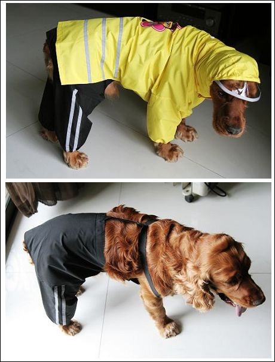
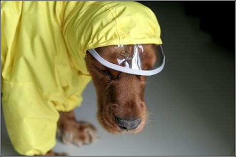

咋样？ @ Jun 15, 2009
活脱脱一个福尔摩斯侦探？
穿警服的小帅哥？
“象个环卫工人...”阿姨说。
呃。。。。。。
不管怎么样，花了98元量身定做的雨衣哦，自得一下自己用皮尺的技术，嘿嘿，分毫不差，穿在它身上正好。就是背上那个小蜜蜂的图案太弱。。。应该印个FBI或者骷髅头之类的。下雨吧，就象昨晚上那种雷电雨。。。出去跑一圈回来，这雨衣才值啊。话说昨天下午四点多钟洗完车，晚上就下雨，20块打水漂了。。。


活脱脱一个福尔摩斯侦探？
穿警服的小帅哥？
“象个环卫工人...”阿姨说。
呃。。。。。。
不管怎么样，花了98元量身定做的雨衣哦，自得一下自己用皮尺的技术，嘿嘿，分毫不差，穿在它身上正好。就是背上那个小蜜蜂的图案太弱。。。应该印个FBI或者骷髅头之类的。下雨吧，就象昨晚上那种雷电雨。。。出去跑一圈回来，这雨衣才值啊。话说昨天下午四点多钟洗完车，晚上就下雨，20块打水漂了。。。


« 观看CRC南京站比赛 | 死神来了？ »
20 Responses to “咋样？”
2009-06-15
没看见尾巴
2009-06-15
太可爱了，还有这种衣服！不过不知道透不透气呢，别把小帅哥捂出汗哟，到时一样湿漉漉的。
2009-06-15
楼上的有点常识还好呢？狗是通过舌头散热滴~
雨衣，肯定不透气不透水。
2009-06-15
我总觉得狗儿穿上衣服就像人不穿衣服一样不自在。像福尔摩斯？不像。华生吧。
2009-06-15
不管穿不穿衣服，习惯就好：D
人家狗狗下雨不愿意出门，它是无所谓，照样在雨里淋，回家就惨了，还得拿吹风机吹。。。
2009-06-15
狗狗怕下雨吗？下雨天出门要打伞吗？。。。哎
2009-06-15
不。。。怕。。。。下。。。雨。。。。
但是，下雨天它身上都是雨水和泥水，回家用毛巾擦是没用滴，要么洗澡！每次雨天散步回来就给它洗个澡~不如洗雨衣方便啊~
2009-06-15
再弄双小雨鞋就完美了
2009-06-15
大姜炖去又出“馊”主意了:-)我觉得狗其实不喜欢被套上这些玩意。人类看起来是为自己心爱的宠物舍得花费，最后还是愉悦自己的眼睛和心情。（绝无恶意哈*_*）
2009-06-15
呵呵，太可爱了！像个小消防员
2009-06-15
穿这身在雨里玩一把水，那真是值了！
2009-06-15
给你家两小子也弄一身雨衣吧，嘎嘎~
2009-06-16
哈哈哈哈哈哈！本来觉得蛮酷的，被你一说，还真像环卫工人
2009-06-16
超酷！！
2009-06-16
我想问问Luke穿的啊舒服?
2009-06-16
狗狗没有身下图片，会不会影响上厕所呢？衣服真好看
2009-06-16
to be honest, it is the best design I have ever seen. very well done!
2009-06-16
看到这雨衣我眼前就浮现出这样的一幕:狗狗在散步的时候见到某电灯柱,然后熟练地抬起它的后腿,然后……….OH ,我不敢往下想了- -#
2009-06-17
感觉还是洗澡方便些. 这样人看了不错,不知道狗狗喜不喜欢.
狗洗澡直接把他们放到一个角落用水冲就行, 夏天干的快
2009-06-17
开玩笑，表层毛干了，最里面的毛很难干的，每次洗澡完都要用吹风机吹干。不然容易得皮肤病。洗雨衣方便啊。
人家的雨衣是开档的，便便也不怕：）
Leave A Reply
存档只读，评论已关闭。